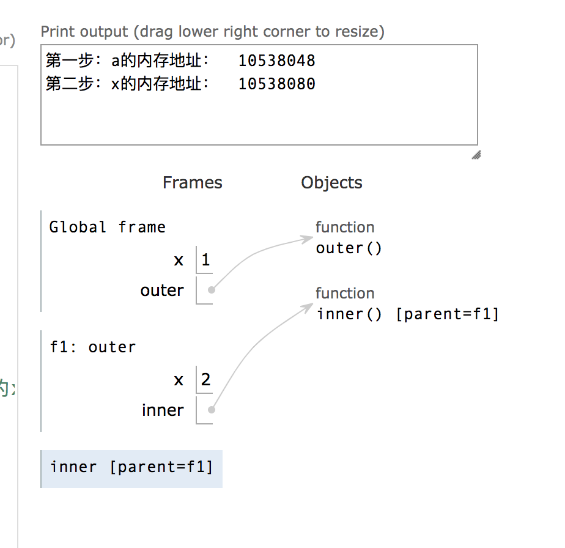
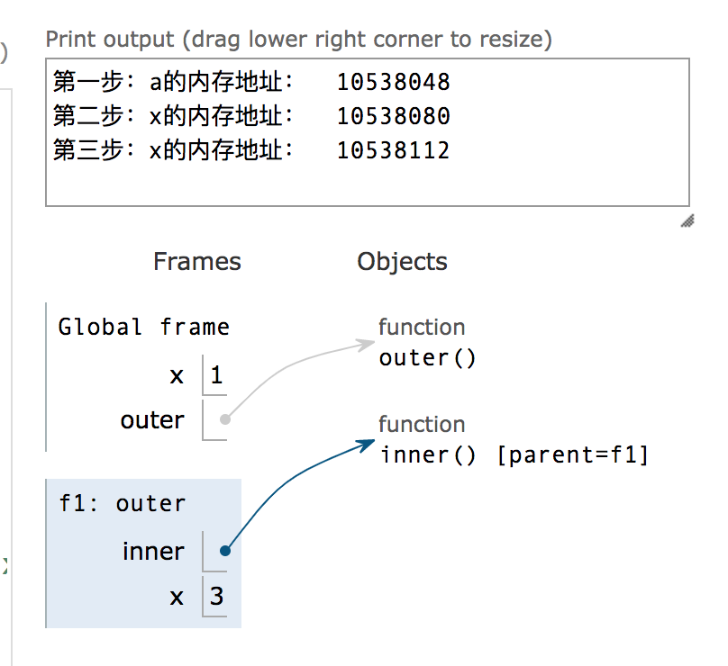

目标
- 尽量掌握 Python 命名空间、作用域
- 掌握 Python 匿名函数
本文本属于那种
只可意会不可言传的范畴
原因:
1 | 1. 大部分人都直接开撸，因为和想象差不多； |
第一部分 命名空间
听起来高大上的词汇，或许是简单的.
在理解这个词汇钱，先看一个示例
A 公司有个员工 A1，工号 001；
B 公司有个员工 B1，工号 001；
为何工资不会发错？
这不废话么？
原因在于：虽有同样的工号，但是相对而言的，在不同的公司（空间）内。
1.定义
命名空间（英语：Namespace），也称名字空间、名称空间等，它表示着一个标识符（identifier）的可见范围。
一个标识符可在多个名字空间中定义，它在不同名字空间中的含义是互不相干的。这样，在一个新的名字空间中可定义任何标识符，它们不会与任何已有的标识符发生冲突，因为已有的定义都处于其他名字空间中。
空间相当于一个集合，包含相对相对范围内所有的内容(对象名)
2. 分类
- 内置命名空间(Built-in Namespaces)：伴随 Python 的运行而存在，
内置函数的命名空间都属于内置命名空间，比如前面的 id()，直接可以用。 - 全局命名空间(Module:Global Namespaces)：每个模块拥有自己的命名集合；
- 本地命名空间(Function&Class: Local Namespaces)：局部命名空间，每个函数、类所拥有的命名空间，记录了函数、类中定义的所有变量。
一图胜前言

3. 生命周期
- 内置命名空间在 Python
解释器启动时创建，解释器退出时销毁； - 全局命名空间在模块被解释器
读入时创建，解释器退出时销毁； - 局部命名空间，包含函数、类定义。
- 函数的局部命名空间：在函数调用时创建，函数返回结果或抛出异常时被销毁（每一个递归函数都拥有自己的命名空间）；
- 类定义的命名空间：在解释器读到类定义（class 关键字）时创建，类定义结束后销毁。（*）
4. 存在的意义
为了解决命名冲突。
你去寄快递，说邮寄到南京路 118 号，他肯定会让你写上是哪个省的，否则不就乱了么。
第二部分 作用域
1. 作用域是什么？
可能有点绕，多读几遍，多思考下
可能有点绕，多读几遍，多思考下
命名空间是对象名称的集合,可被访问区域，比如 id(),可以全局被调用
作用域是针对命名空间而言的，是作用域定义了命名空间的可用范围
以下注意事项会在第三部分的代码中证实：
- 只有函数、类、模块会产生新的作用域，代码块（例如if、for代码块）不会产生新的作用域。
- python中变量的作用域是由它在源代码中的位置决定的（*）
先看下分类，然后进一步阐述命名空间与作用域的关系
2. 分类
- Local（局部作用域）：首先搜索，包含局部名字的最内层（innermost）作用域，如函数/方法/类的内部局部作用域；
- Enclosing（ 闭包函数外的函数中）：根据嵌套层次从内到外搜索，包含非局部（nonlocal）非全局（nonglobal）名字的任意封闭函数的作用域。如两个嵌套的函数，内层函数的作用域是局部作用域，外层函数作用域就是内层函数的 Enclosing 作用域；
- Global（全局作用域
）：倒数第二次被搜索，包含当前模块全局名字的作用域； - Built-in（内建作用域）：最后被搜索，包含内建名字的最外层作用域。
查找规则

内层可以访问外层，但外层不能访问内层
1 | global_var = 2 # 全局作用域 |
3. 关系
尽量用自己的理解去阐述明白，如有不对，敬请指正。
第一阶段：在人类诞生初期，是没有族群、部落、国家之分的，此时相当于全人类都是属于一个人类的集合，此时的人类相当于一个人类，没有高低贵贱黑白美丑之分。
第二阶段：族群的出现，代表着某些人有用自己的势力范围，把人类一个整体分为N个族群
第三部分 函数作用域
上一篇是关于函数的，那就以函数作用域为实例，类、模块都是类似的。
1. 整体的例子
1 | x = 1 |
1 | $ python3 fun.py |
2. nonlocal和global区别
- global关键字：用来在函数或其它局部作用域中使用全局变量。
- nonlocal关键字：用来在函数或其它作用域中使用外层（非全局）变量
1 | x = 1 |
针对outer中x的：
采用global的结果
采用nonlocal的结果

3. 作用域的位置
1 | name ='简单即是美' |
Python函数的作用域取决于其函数代码块在整体代码中的位置，而不是调用时机的位置。调用f1的时候，会去f1函数的定义体查找，对于f1函数，它的外部是name=’简单即是美’，而不是name = ‘Python’。
结果
1 | 简单即是美 |
倒数第二步
参考链接